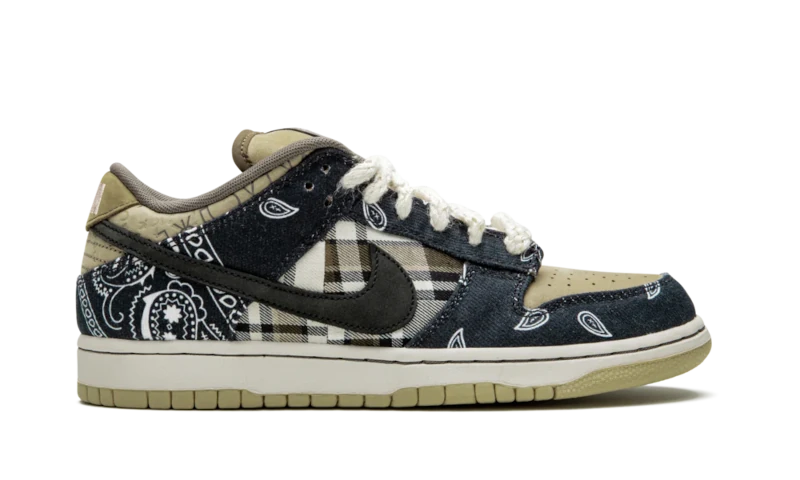

Sobre o tenis
O Nike SB Dunk Low x Travis Scott (Special Box) é uma edição com caixa especial da primeira colaboração do Travis Scott com a Nike SB. O lançamento do primeiro Nike SB Dunk do Travis Scott ocorreu em 2020 e é considerado uma das melhores colaborações do SB Dunk em toda a história do tênis.
Quanto ao seu design, apresenta painéis de estampa paisley em azul marinho escuro no calcanhar e antepé, que contrastam com o padrão xadrez encontrado no painel central e na biqueira em tons de cáqui. Cada tênis possui Swooshes em rosa desgastado e preto em lados opostos da parte superior.
Além disso o par vem com cadarços brancos extra largos e inclui a marca "Cactus Jack" na língua. Uma entressola branca e sola em tom bege completam a abordagem única de Scott para o clássico tênis de skate. Essa versão mais limitada do tênis é embalada em uma caixa especial com estampas paisley e xadrez, refletindo o design do próprio tênis.
